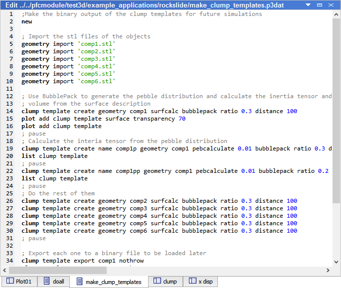

编辑器窗格


图 1：编辑器窗格。单击可在单独窗口中放大。
编辑器 窗格提供编辑基于文本的项目资源（数据文件、FISH 文件等）的能力。它仅限于显示文本，可用于任何文本文件。文本编辑的主要工具显示在 工具栏（toolbar） 上，其中大部分也出现在窗格的 右键菜单（right-click menu） 中。影响 编辑器 窗格外观及其所显示文本的用户首选项和设置——包括语法高亮设置——可在 i 选项（Options） 对话框的 i 编辑器（Editor） 页面中设置；按工具栏上的 选项 按钮（ ）即可访问。
）即可访问。
编辑器 窗格提供专为处理 Itasca 软件数据文件而设计的功能，包括：自动语法高亮；可折叠的 FISH 块、行号以及 命令编写辅助工具（command-authoring assistance tools）。也许最重要的是，可通过工具栏上的“执行/停止”按钮（ ）在窗格内对数据文件内容进行命令处理（另请参见 工具栏（toolbar） 上的“运行所选内容”按钮（
）在窗格内对数据文件内容进行命令处理（另请参见 工具栏（toolbar） 上的“运行所选内容”按钮（ ））。
））。
语法高亮
编辑器 窗格中的语法高亮最初设置为与本文档中出现的示例列表相匹配的值。用户可通过访问 i 选项（Options） 对话框中的 i 编辑器（Editor） 页面来更改设置。默认设置的直观指南如下。
| 字体样式/字符 | 用于 |
|---|---|
| command | 命令中的第一个词 |
| keyword | 命令关键字 |
| fishword | FISH 函数名或语句 |
| fishvar | FISH 变量 |
| flt 或 int | 浮点型或整型的数值 |
| str 或 bool | 字符串值或布尔值 |
| comment | 注释 |
| stop | stop、pause、return、quit（停止类词） |
| solve | solve、cycle（执行类词） |
| & 或 … | 续行字符 |
| 这些内容对您有帮助吗？… | FLAC3D © 2019, Itasca | 原文更新于 2020 年 10 月 8 日 |